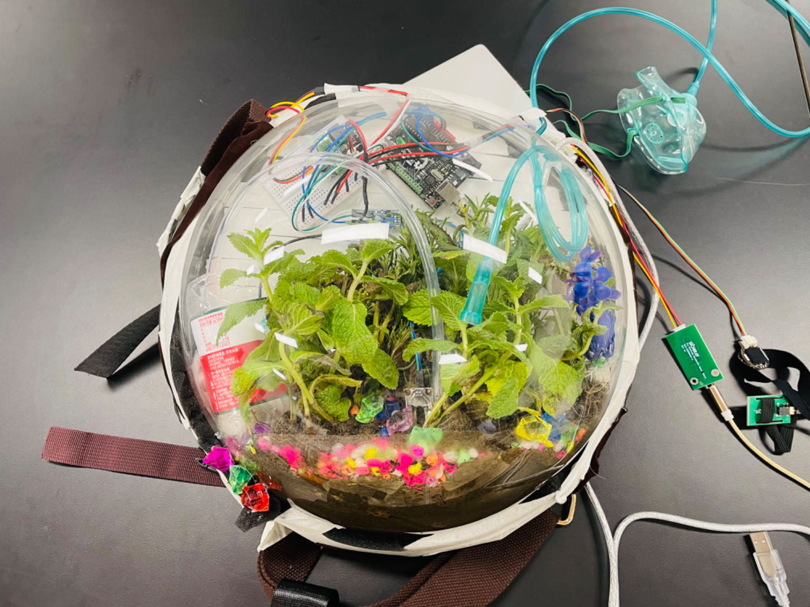
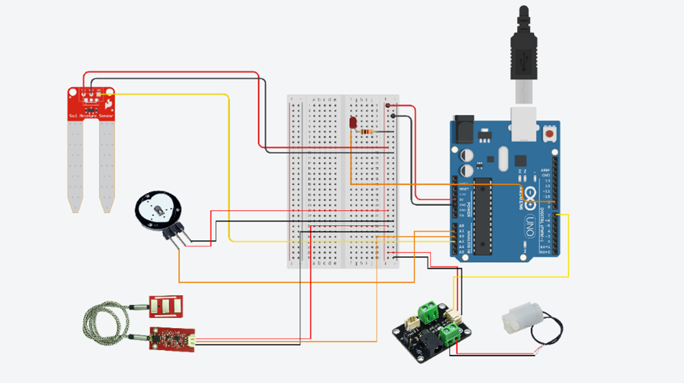

This project aims to explore the interrelationship between humans and nature, emphasizing the impact of human activities on the environment and ecosystems. We hope to design a wearable device that helps users realize how their behaviors directly or indirectly affect nature.
1. Prototype 1
Software Technology Review
- Sensor Design: Select heart rate sensors, electromyography (EMG) sensors, and plant moisture sensors to collect user physiological data and monitor plant growth conditions.
- Data Collection: The combination of these sensors enables real-time monitoring and analysis of user interactions with plants.
User Interface Code (Processing)
Use Processing to code the user interface, showcasing real-time data and interactive features. Key functions include setting up the interface, drawing data, and handling user input.
Connecting the Three Sensors (Arduino Component)
Design a connection scheme for electronic components to ensure the device operates correctly and transmits data. Use serial communication to facilitate data exchange between the device and the computer.
2. Hardware Design
The device draws inspiration from the concept of symbiotic interaction design, employing a backpack-style wearable design. A transparent fish tank is chosen as the plant growth environment for easy user observation. Integrate the plants with electronic components to enhance user experience.
Image of the hardware design for the wearable device.
3. Prototype 2 (Final Prototype)
Hardware Components
- Include heart rate, EMG, and moisture sensors, along with an Arduino microcontroller.
- Design a water pump and LED indicators to facilitate plant watering and status feedback.
Software Components
Use Arduino IDE for programming, processing sensor data. Create an intuitive user interface to display real-time data.
User Interaction
Provide detailed installation steps to ensure users can easily operate the device. Implement real-time feedback mechanisms to inform users about plant growth conditions.
This is how the sensor is connected to the motherboard.
Safety and Ergonomics
Consider user safety in the design, ensuring device comfort and usability.
User Feedback
Collect user feedback on the prototype to evaluate ease of use and practicality. Make improvements based on user feedback to optimize the device design.

An image showing the plant care system in action.
Conclusion
This project aims to raise user awareness about the environment by using technology to foster understanding and protection of nature. We hope that this device will guide users to reflect on the connection between their behaviors and the natural environment.
Leaving Problems for Future Improvement
- Address the mobility limitations of the device by exploring wireless connection options.
- Enhance the accuracy of the sensors to ensure reliable data.
- Improve the user interface design by adding more visual elements to enhance user experience.
Thank you for visiting my page! Feel free to reach out if you have any questions or just want to connect.
Back to Homepage